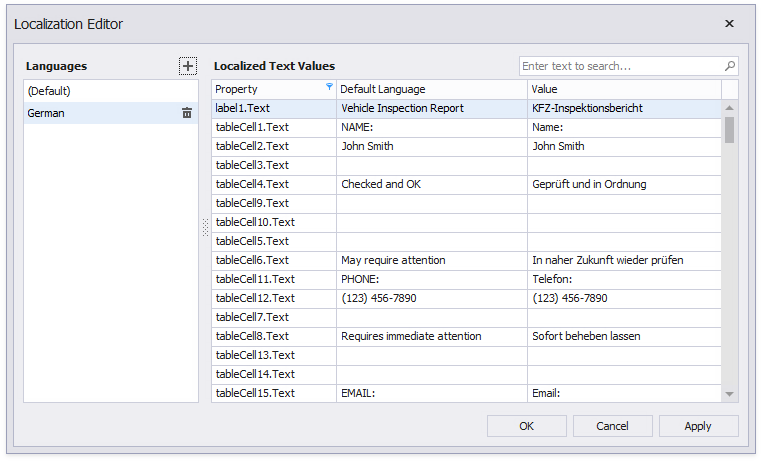
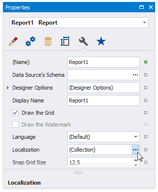
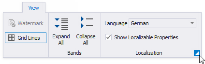

Localization Editor
The Localization Editor allows you to change the text of the localizable textual properties for all the controls in a report.

The left panel allows you to change the report's language or add a new language to start localization. The right panel contains a grid that displays the property name, the text specified for that property in the default language, and the text for the selected language. Text strings of the selected language are editable.
Invoke the Localization Editor
Use one of the following actions:
Click the report's smart tag in the Report Designer and select Edit Localization in the action list:

Click the Localization property's ellipsis button in the Property Grid:

Click the dialog box launcher in the Toolbar's Localization group:

Use the Localization Editor
To add a new language, click the plus button at the right panel. All values for the new language are copied from the default language's values.
Change the text and click Apply to apply your changes and preview the text in the report designer.
Click OK to apply changes and close the editor.
Tip
When the Localization Editor is invoked, the grid in the right panel displays values for the report controls' Text properties. You can click the Property column header to modify a filter and select other properties or clear the filter to show all textual properties. Grid rows are arranged in the same order as report controls in the Report Explorer tree - from top to bottom and from left to right.